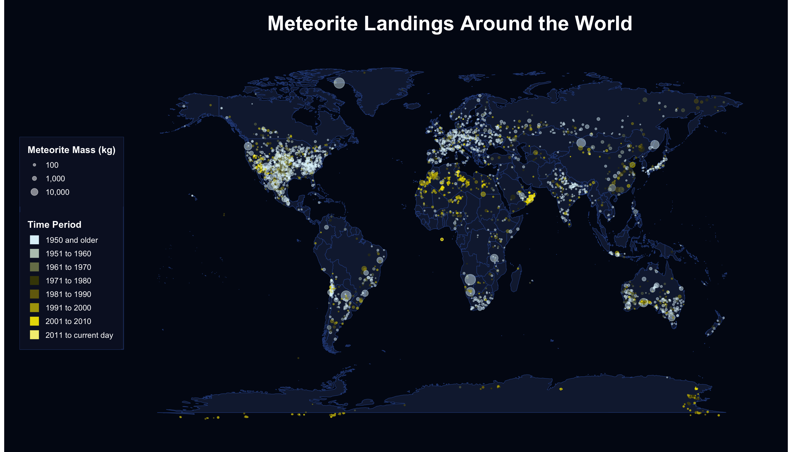
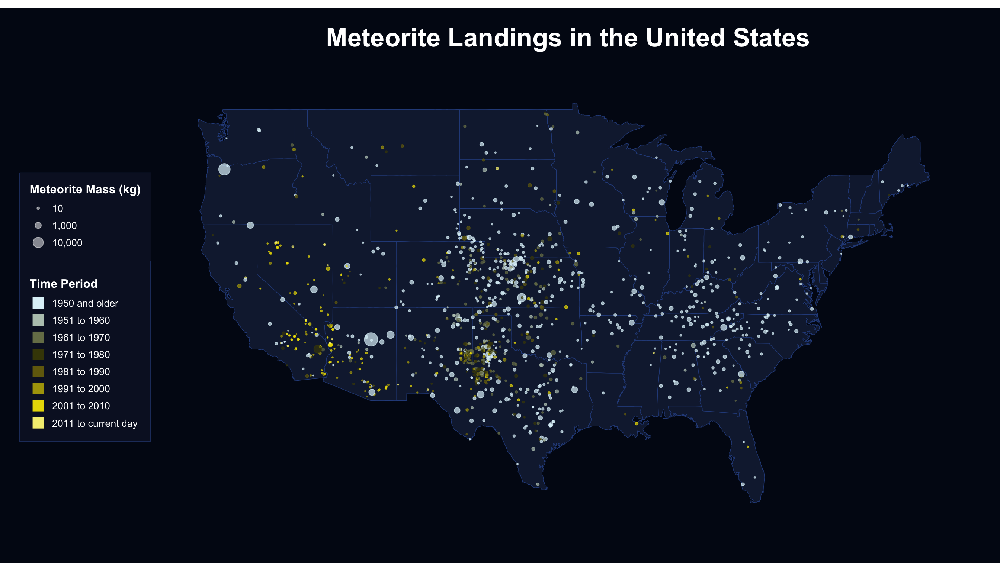
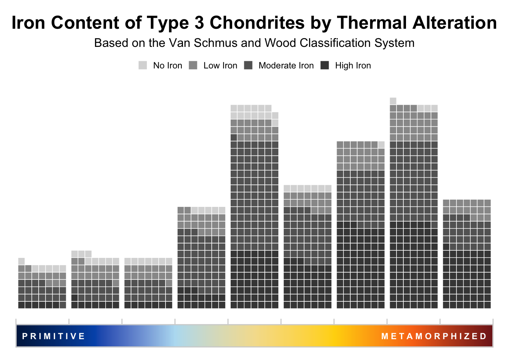

Portfolio Part 2: Data Cleaning and Rough Draft
My project will use NASA meteorite landing data to explore where meteorites are found, how recorded landings have changed over time, and how meteorite mass differs across categories.
Data Description
1. Identify your data source.
I will be using a dataset on meteorite landings from NASA, which I found through NASA’s Open Data Portal. The dataset contains records of meteorites that have been found or observed falling to Earth and includes their physical characteristics and geographic locations.
2. Describe your data, including variables and data types.
The dataset contains over 45,000 observations and includes a mix of categorical and numerical variables. These variables provide identifying information, classification details, measurements, and geographic coordinates that can be used to analyze both temporal and spatial patterns in meteorite landings.
| Name | Type | Description |
|---|---|---|
name |
character | name of the meteorite |
id |
numeric | unique identifier for each meteorite |
nametype |
character | indicates whether the meteorite is classified as valid |
recclass |
character | meteorite classification type |
mass (g) |
numeric | mass of the meteorite |
fall |
character | indicates whether the meteorite was observed falling or later discovered |
year |
numeric | year the meteorite was recorded |
reclat |
numeric | latitude coordinate of the meteorite landing |
reclong |
numeric | longitude coordinate of the meteorite landing |
geoLocation |
character | combined latitude and longitude coordinates |
3. Identify the research questions you want to answer.
- How has the number of recorded meteorite landings changed over time?
- Where are meteorites most commonly found across the globe?
- How does meteorite mass vary across different classifications and fall types?
Data Cleaning
Setup
This code chunk will load the packages I want to use and read in the raw meteorite data from the data-raw folder as well as use clean_names( ) so that variables such as mass (g) and geoLocation are renamed to cleaner formats like mass_g and geo_location. I am also going to remove columns with redundant information or information I don’t need for my visualizations. Lastly, I am going to convert the fall column into a factor variable type.
Convert Variable Types
Next we will convert variable types to be better suited to our needs for making visualizations by using the mutate function to convert fall and reclass into factors.
Data Set No.1
My first data set will be used to visualize the landings of meteorites on Earth and in the US across different decades. I am going to filter the original data set to remove any years after 2026. I am also going to remove the columns for information I don’t need for this specific dataset.
Next I am going to recreate an additional factor variable called decades based off the values of interest in year. I am also going to convert mass_g to mass_kg. I am also going to create a second data set that only includes the observations within the United States for my second map.
Lastly I am going to save the cleaned data set into the correct folder.
Data Set No.2
My second visualization will display the iron content and the levels of thermal alteration of chondrite meteorites based on the Van Schmus and Wood classification, which ranks meteorites from 1 to 7 based on the degree of changes they underwent on their parent asteroid. First I am going to create a new dataset that only includes the recclass column, as it contains all the information I need.
Next I am going to create a column that extracts the number representing the level of thermal alteration. Type 3 chondrites, also known as unequilibriated chondrites, are further broken down into subtypes. I am going to create bins for each level of the Type 3 subtypes.
Then I am going to create a column that extracts the iron content of each chondrite.
Data Set No.3
Then I am going to create new variables, starting with composition. I am going to create a composition class, a composition type, and a composition subtype based on chemical composition if that information is available.
Save Cleaned Data
After cleaning and creating new variables, the dataset is saved to the data-clean folder as a new .csv file. This preserves a finalized version of the data that can be reused for visualization and analysis without repeating the cleaning steps.
Data Visualization
Rough Draft No.1a
Rough Draft No.1b

Rough Draft No.3
